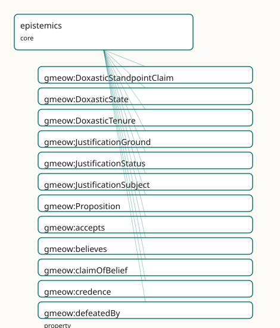

GMEOW Epistemics Module
- IRI: https://blackcatinformatics.ca/gmeow/slices/epistemics
- Tier: core
Group: core
What This Slice Covers
This slice owns 24 terms and contributes 7 mapping or projection rows. Use it when its terms match the native fact you want to preserve; use the linkage tables to see how those facts leave GMEOW for consumer vocabularies.
Dependencies
gmeow:slices/attestationgmeow:slices/evidencegmeow:slices/inferencegmeow:slices/kernelgmeow:slices/observationsgmeow:slices/standpointgmeow:slices/temporal
Consumers
- The agent-memory flagship store_claim / recall MCP surface (Principle 14): an LLM output is a held attitude toward a proposition, recorded via the flat doxastic spine; the keystone
knowsThatsubPropertyOf believes materialises belief from any knowledge claim. The reified tier (DoxasticState, credence,doxasticClaim,DoxasticTenure) lives in this slice, reusing temporal:TimeScopedRelation/duringInterval and standpoint:StandpointClaim/claimModality. The lightweightgmeow:justifiedByhook points aDoxasticStateatEvidenceSpan,Attestation, orDoxasticStatejustifiers; full inferential argumentation remains in the sibling justification child.
Local Map

Examples
Belief And Knowledge
- Source:
slices/core/epistemics/examples/belief-and-knowledge.ttl - GMEOW terms:
gmeow:Agent,gmeow:Proposition,gmeow:accepts,gmeow:believes,gmeow:knowsThat,gmeow:suspendsJudgementOn
# SPDX-FileCopyrightText: 2026 Blackcat Informatics® Inc. <paudley@blackcatinformatics.ca>
# SPDX-License-Identifier: CC-BY-4.0
#
# Worked example — the flat doxastic spine. An agent knowsThat one proposition
# (which ENTAILS believes by the keystone), believes a second, pragmatically
# accepts a third without believing it, and suspends judgement on a fourth.
# No truth bit anywhere; modality and vantage would ride the statement layer.
@prefix gmeow: <https://blackcatinformatics.ca/gmeow/> .
@prefix ex: <https://example.org/> .
@prefix rdfs: <http://www.w3.org/2000/01/rdf-schema#> .
ex:earthOrbitsSun a gmeow:Proposition ; rdfs:label "the Earth orbits the Sun"@en .
ex:coffeeIsHealthy a gmeow:Proposition ; rdfs:label "coffee is healthy"@en .
ex:nullHypothesis a gmeow:Proposition ; rdfs:label "the null hypothesis, assumed for the test"@en .
ex:lifeOnEuropa a gmeow:Proposition ; rdfs:label "there is life on Europa"@en .
ex:ada a gmeow:Agent ;
gmeow:knowsThat ex:earthOrbitsSun ; # entails gmeow:believes ex:earthOrbitsSun
gmeow:believes ex:coffeeIsHealthy ;
gmeow:accepts ex:nullHypothesis ; # a working premise — NOT believed
gmeow:suspendsJudgementOn ex:lifeOnEuropa .
Belief Revision
- Source:
slices/core/epistemics/examples/belief-revision.ttl - GMEOW terms:
gmeow:Agent,gmeow:DoxasticState,gmeow:DoxasticTenure,gmeow:Proposition,gmeow:StandpointClaim,gmeow:TimeInterval,gmeow:claimModality,gmeow:credence,gmeow:displayable,gmeow:doxasticClaim - External prefixes:
xsd
# SPDX-FileCopyrightText: 2026 Blackcat Informatics® Inc. <paudley@blackcatinformatics.ca>
# SPDX-License-Identifier: CC-BY-4.0
#
# Worked example — BELIEF REVISION as SUPPRESSION (Principle 10).
#
# An agent believes "the printer is broken" with high credence.
# Later a defeater arrives — "the document was never sent to the print queue" —
# an undercutting defeater: it removes the warrant without asserting the negation.
# Revision does NOT delete anything:
# * the original DoxasticState is RETAINED;
# * the original DoxasticTenure is CLOSED (endedAtTime) and marked displayable false;
# * a new DoxasticState (lower credence / different modality) records the revision.
@prefix gmeow: <https://blackcatinformatics.ca/gmeow/> .
@prefix ex: <https://blackcatinformatics.ca/gmeow/examples/epistemics/> .
@prefix rdfs: <http://www.w3.org/2000/01/rdf-schema#> .
@prefix xsd: <http://www.w3.org/2001/XMLSchema#> .
ex:operator a gmeow:Agent ;
rdfs:label "Office operator"@en .
ex:propPrinterBroken a gmeow:Proposition ;
rdfs:label "the printer is broken"@en .
# --- Original belief (high credence, unequivocal) -----------------------------
ex:originalBelief a gmeow:DoxasticState ;
rdfs:label "original belief: the printer is broken"@en ;
gmeow:epistemicAgent ex:operator ;
gmeow:doxasticContent ex:propPrinterBroken ;
gmeow:credence "0.92"^^xsd:decimal ;
gmeow:doxasticClaim ex:originalClaim .
ex:originalClaim a gmeow:StandpointClaim ;
rdfs:label "Original claim: printer is broken"@en ;
gmeow:vantage ex:operator ;
gmeow:observedFeature ex:propPrinterBroken ;
gmeow:claimModality gmeow:unequivocal ;
gmeow:observationMethod gmeow:methodExpertJudgement .
ex:originalTenure a gmeow:DoxasticTenure ;
rdfs:label "Original tenure of the 'printer is broken' belief"@en ;
gmeow:tenureOfDoxasticState ex:originalBelief ;
gmeow:duringInterval ex:originalInterval .
ex:originalInterval a gmeow:TimeInterval ;
gmeow:startedAtTime "2026-06-15T11:00:00Z"^^xsd:dateTime ;
gmeow:endedAtTime "2026-06-15T11:18:00Z"^^xsd:dateTime ;
gmeow:hasTemporalFrame gmeow:temporalFrameUTCGregorian .
# --- Suppression of the withdrawn original tenure -----------------------------
ex:originalTenure gmeow:displayable false .
# --- Revised belief (lower credence, probable) --------------------------------
ex:revisedBelief a gmeow:DoxasticState ;
rdfs:label "revised belief: printer may be broken"@en ;
gmeow:epistemicAgent ex:operator ;
gmeow:doxasticContent ex:propPrinterBroken ;
gmeow:credence "0.35"^^xsd:decimal ;
gmeow:doxasticClaim ex:revisedClaim .
ex:revisedClaim a gmeow:StandpointClaim ;
rdfs:label "Revised claim: printer may be broken"@en ;
gmeow:vantage ex:operator ;
gmeow:observedFeature ex:propPrinterBroken ;
gmeow:claimModality gmeow:probable ;
gmeow:observationMethod gmeow:methodExpertJudgement .
ex:revisedTenure a gmeow:DoxasticTenure ;
rdfs:label "Revised tenure of the 'printer may be broken' belief"@en ;
gmeow:tenureOfDoxasticState ex:revisedBelief ;
gmeow:duringInterval ex:revisedInterval .
ex:revisedInterval a gmeow:TimeInterval ;
gmeow:startedAtTime "2026-06-15T11:18:00Z"^^xsd:dateTime ;
gmeow:hasTemporalFrame gmeow:temporalFrameUTCGregorian .
Flagship Epistemic Ledger
- Source:
slices/core/epistemics/examples/flagship-epistemic-ledger.ttl - GMEOW terms:
gmeow:Chunk,gmeow:Document,gmeow:DoxasticState,gmeow:DoxasticTenure,gmeow:EvidenceSpan,gmeow:Person,gmeow:Proposition,gmeow:SoftwareAgent,gmeow:StandpointClaim,gmeow:TimeInterval - External prefixes:
xsd
# SPDX-FileCopyrightText: 2026 Blackcat Informatics® Inc. <paudley@blackcatinformatics.ca>
# SPDX-License-Identifier: CC-BY-4.0
#
# Flagship worked example — EPISTEMIC LEDGER (, Task 3).
#
# Scenario: an operator asks whether the flagship LLM recalled a meeting date
# correctly. Initially the operator is fairly confident (credence 0.85) and
# the belief is justified by an EvidenceSpan pinned to a calendar source.
# A defeater then arrives, the operator revises down to credence 0.30, and the
# original tenure is closed and suppressed (Principle 10). Meanwhile the LLM
# itself is modeled as knowing-that the proposition (non-factive: it entails
# the LLM believes it, but commits no global truth), while a skeptic doubts the
# same proposition and records a standpoint-indexed refutation. Competing
# attitudes coexist; none is privileged (Principle 9).
@prefix gmeow: <https://blackcatinformatics.ca/gmeow/> .
@prefix ex: <https://blackcatinformatics.ca/gmeow/examples/epistemics/flagship/> .
@prefix rdfs: <http://www.w3.org/2000/01/rdf-schema#> .
@prefix xsd: <http://www.w3.org/2001/XMLSchema#> .
# --- Three agents ----------------------------------------------------------------
ex:llm a gmeow:SoftwareAgent ;
rdfs:label "flagship LLM"@en .
ex:operator a gmeow:Person ;
rdfs:label "human operator"@en .
ex:skeptic a gmeow:Person ;
rdfs:label "skeptical reviewer"@en .
# --- The proposition -------------------------------------------------------------
ex:propRecall a gmeow:Proposition ;
rdfs:label "the flagship LLM recalled the meeting date correctly"@en .
# --- Original credence-weighted belief (operator) --------------------------------
ex:opBeliefOriginal a gmeow:DoxasticState ;
rdfs:label "original belief: LLM recalled the meeting date correctly"@en ;
gmeow:epistemicAgent ex:operator ;
gmeow:doxasticContent ex:propRecall ;
gmeow:doxasticClaim ex:opClaimOriginal ;
gmeow:credence "0.85"^^xsd:decimal ;
gmeow:justifiedBy ex:evidenceSpan1 .
ex:opClaimOriginal a gmeow:StandpointClaim ;
rdfs:label "original operator claim: LLM recalled the meeting date correctly"@en ;
gmeow:vantage ex:operator ;
gmeow:observedFeature ex:propRecall ;
gmeow:claimModality gmeow:probable ;
gmeow:observationMethod gmeow:methodExpertJudgement .
# --- EvidenceSpan justification pinned to a source chunk -------------------------
ex:evidenceSpan1 a gmeow:EvidenceSpan ;
rdfs:label "calendar evidence span for the meeting date"@en ;
gmeow:selectorTextQuote "the meeting is scheduled for 2026-06-18"@en ;
gmeow:spanOfChunk ex:chunk1 .
ex:chunk1 a gmeow:Chunk ;
rdfs:label "retrieved chunk containing the meeting date"@en ;
gmeow:chunkOf ex:source1 ;
gmeow:spanStart 142 ;
gmeow:spanEnd 186 .
ex:source1 a gmeow:Document ;
rdfs:label "team calendar entry"@en ;
gmeow:sourceLocation "https://calendar.example.com/events/2026-06-18-meeting" .
# --- Original open-ended tenure --------------------------------------------------
ex:opTenureOriginal a gmeow:DoxasticTenure ;
rdfs:label "original tenure of the operator's belief"@en ;
gmeow:tenureOfDoxasticState ex:opBeliefOriginal ;
gmeow:duringInterval ex:originalInterval .
ex:originalInterval a gmeow:TimeInterval ;
gmeow:startedAtTime "2026-06-10T09:00:00Z"^^xsd:dateTime ;
gmeow:hasTemporalFrame gmeow:temporalFrameUTCGregorian .
# --- Revised belief after a defeater ---------------------------------------------
ex:opBeliefRevised a gmeow:DoxasticState ;
rdfs:label "revised belief: LLM probably misremembered the meeting date"@en ;
gmeow:epistemicAgent ex:operator ;
gmeow:doxasticContent ex:propRecall ;
gmeow:doxasticClaim ex:opClaimRevised ;
gmeow:credence "0.30"^^xsd:decimal .
ex:opClaimRevised a gmeow:StandpointClaim ;
rdfs:label "revised operator claim: LLM recall is at best conceivable"@en ;
gmeow:vantage ex:operator ;
gmeow:observedFeature ex:propRecall ;
gmeow:claimModality gmeow:conceivable ;
gmeow:observationMethod gmeow:methodExpertJudgement .
ex:opTenureRevised a gmeow:DoxasticTenure ;
rdfs:label "revised tenure of the operator's belief"@en ;
gmeow:tenureOfDoxasticState ex:opBeliefRevised ;
gmeow:duringInterval ex:revisedInterval .
ex:revisedInterval a gmeow:TimeInterval ;
gmeow:startedAtTime "2026-06-15T14:00:00Z"^^xsd:dateTime ;
gmeow:hasTemporalFrame gmeow:temporalFrameUTCGregorian .
# --- Suppression of the original tenure (Principle 10) ---------------------------
ex:originalInterval gmeow:endedAtTime "2026-06-15T14:00:00Z"^^xsd:dateTime .
ex:opTenureOriginal gmeow:displayable false .
# --- Non-factive knowsThat coexisting with standpoint-indexed denial -------------
# knowsThat is NON-FACTIVE: asserting it only entails gmeow:believes for the LLM;
# it commits no global truth verdict.
ex:llm gmeow:knowsThat ex:propRecall .
ex:skeptic gmeow:doubts ex:propRecall .
ex:skepticDenial a gmeow:StandpointClaim ;
rdfs:label "skeptic's standpoint-indexed denial"@en ;
gmeow:vantage ex:skeptic ;
gmeow:observedFeature ex:propRecall ;
gmeow:claimModality gmeow:refuted ;
gmeow:observationMethod gmeow:methodExpertJudgement .
Justification And Defeat
- Source:
slices/core/epistemics/examples/justification-and-defeat.ttl - GMEOW terms:
gmeow:Agent,gmeow:DoxasticStandpointClaim,gmeow:DoxasticState,gmeow:Event,gmeow:EvidenceSpan,gmeow:PhysicalObject,gmeow:Proposition,gmeow:claimModality,gmeow:claimOfBelief,gmeow:credence - External prefixes:
xsd
# SPDX-FileCopyrightText: 2026 Blackcat Informatics® Inc. <paudley@blackcatinformatics.ca>
# SPDX-License-Identifier: CC-BY-4.0
#
# Worked example — epistemic justification and defeat (, Principle 8).
#
# Three cases:
# 1. Justified belief: Ada believes it is noon because a working wall clock
# reads 12:00. The DoxasticState is justifiedBy the EvidenceSpan of the
# clock reading, and the DoxasticStandpointClaim reports that held state.
# 2. Gettier-defeated belief: Ada believes it is noon because a stopped clock
# happens to show 12:00. The evidence is the same kind (a clock-face
# reading), but a solver flags the state defeatedBy
# gmeow:justificationStatusGettier because the justification is misleading —
# the belief is true only by accident.
# 3. Lie: Bob privately believes it is noon (held DoxasticState/Claim), but
# publicly projects that it is 3pm (projected DoxasticStandpointClaim). The
# lie is a gmeow:Event of eventTypeLie linking the held and projected
# standpoints; the divergence IS the deception.
@prefix gmeow: <https://blackcatinformatics.ca/gmeow/> .
@prefix ex: <https://blackcatinformatics.ca/gmeow/examples/epistemics/> .
@prefix rdfs: <http://www.w3.org/2000/01/rdf-schema#> .
@prefix xsd: <http://www.w3.org/2001/XMLSchema#> .
# --- Propositions ------------------------------------------------------------
ex:timeNoon a gmeow:Proposition ; rdfs:label "the current time is 12:00"@en .
ex:timeThreePm a gmeow:Proposition ; rdfs:label "the current time is 15:00"@en .
# --- Agents ------------------------------------------------------------------
ex:ada a gmeow:Agent ; rdfs:label "Ada"@en .
ex:bob a gmeow:Agent ; rdfs:label "Bob"@en .
# --- Evidence spans (clock-face readings) ------------------------------------
# The clock itself is the physical instrument; the reading is the EvidenceSpan
# that anchors the agent's justification.
ex:wallClock a gmeow:PhysicalObject ;
rdfs:label "the working wall clock"@en .
ex:wallClockReading a gmeow:EvidenceSpan ;
rdfs:label "wall-clock reading: 12:00"@en ;
gmeow:selectorTextQuote "12:00"@en .
ex:stoppedClock a gmeow:PhysicalObject ;
rdfs:label "the stopped clock"@en .
ex:stoppedClockReading a gmeow:EvidenceSpan ;
rdfs:label "stopped-clock reading: 12:00"@en ;
gmeow:selectorTextQuote "12:00"@en .
# --- Case 1: justified belief (working clock) --------------------------------
ex:adaJustifiedBelief a gmeow:DoxasticState ;
rdfs:label "Ada's justified belief that it is noon"@en ;
gmeow:epistemicAgent ex:ada ;
gmeow:doxasticContent ex:timeNoon ;
gmeow:credence "0.95"^^xsd:decimal ;
gmeow:doxasticClaim ex:adaJustifiedClaim ;
gmeow:justifiedBy ex:wallClockReading .
ex:adaJustifiedClaim a gmeow:DoxasticStandpointClaim ;
rdfs:label "Ada's justified standpoint claim that it is noon"@en ;
gmeow:vantage ex:ada ;
gmeow:observedFeature ex:timeNoon ;
gmeow:claimModality gmeow:unequivocal ;
gmeow:observationMethod gmeow:methodInstrumentalReading ;
gmeow:claimOfBelief ex:adaJustifiedBelief .
# --- Case 2: Gettier-defeated belief (stopped clock) -------------------------
# Same evidential kind as Case 1, but the basis is misleading: the clock is
# stopped and only happens to show the correct time. The solver marks the state
# as a Gettier case; the reasoner never infers this.
ex:adaGettierBelief a gmeow:DoxasticState ;
rdfs:label "Ada's Gettier-defeated belief that it is noon"@en ;
gmeow:epistemicAgent ex:ada ;
gmeow:doxasticContent ex:timeNoon ;
gmeow:credence "0.95"^^xsd:decimal ;
gmeow:doxasticClaim ex:adaGettierClaim ;
gmeow:justifiedBy ex:stoppedClockReading ;
gmeow:defeatedBy gmeow:justificationStatusGettier .
ex:adaGettierClaim a gmeow:DoxasticStandpointClaim ;
rdfs:label "Ada's Gettier-defeated standpoint claim that it is noon"@en ;
gmeow:vantage ex:ada ;
gmeow:observedFeature ex:timeNoon ;
gmeow:claimModality gmeow:unequivocal ;
gmeow:observationMethod gmeow:methodInstrumentalReading ;
gmeow:claimOfBelief ex:adaGettierBelief .
# --- Case 3: lie (held noon, projected 3pm) ----------------------------------
# Bob's held belief is about noon; the projected claim is the standpoint he
# communicates. The held standpoint is a DoxasticStandpointClaim grounded in his
# actual DoxasticState; the projected standpoint diverges.
ex:liarHeldBelief a gmeow:DoxasticState ;
rdfs:label "Bob's held belief that it is noon"@en ;
gmeow:epistemicAgent ex:bob ;
gmeow:doxasticContent ex:timeNoon ;
gmeow:credence "0.95"^^xsd:decimal ;
gmeow:doxasticClaim ex:liarHeldClaim .
ex:liarHeldClaim a gmeow:DoxasticStandpointClaim ;
rdfs:label "Bob's held standpoint claim that it is noon"@en ;
gmeow:vantage ex:bob ;
gmeow:observedFeature ex:timeNoon ;
gmeow:claimModality gmeow:unequivocal ;
gmeow:observationMethod gmeow:methodInstrumentalReading ;
gmeow:claimOfBelief ex:liarHeldBelief .
ex:liarProjectedClaim a gmeow:DoxasticStandpointClaim ;
rdfs:label "Bob's projected standpoint claim that it is 3pm"@en ;
gmeow:vantage ex:bob ;
gmeow:observedFeature ex:timeThreePm ;
gmeow:claimModality gmeow:unequivocal ;
gmeow:observationMethod gmeow:methodExpertJudgement .
ex:lieEvent a gmeow:Event ;
rdfs:label "Bob's lie about the time"@en ;
gmeow:eventType gmeow:eventTypeLie ;
gmeow:heldStandpoint ex:liarHeldClaim ;
gmeow:projectedStandpoint ex:liarProjectedClaim .
Terms
Classes
| Term | Label | Definition |
|---|---|---|
gmeow:DoxasticStandpointClaim |
doxastic standpoint claim | A StandpointClaim that explicitly reports a held DoxasticState — the reified, vantage-indexed claim that an agent is in a particular believing mode toward a pr... |
gmeow:DoxasticState |
Doxastic State | An agent's intrinsic believing mode toward a proposition — the reified, first-class mental moment that grounds the flat doxastic spine (gmeow:believes, gmeow:k... |
gmeow:DoxasticTenure |
Doxastic Tenure | The reified, time-scoped fact that a DoxasticState was held over an interval — the belief-revision history construct. Opened when the belief is adopted; closed... |
gmeow:JustificationGround |
Justification Ground | The class of things that can serve as a justification basis — an evidence span, an attestation, or a further doxastic state. Introduced as a named superclass s... |
gmeow:JustificationStatus |
Justification Status | A value vocabulary for justification-defeat states of a doxastic state or standpoint-claim — solver-set flags such as Gettier-case, defeated, undercut, and reb... |
gmeow:JustificationSubject |
Justification Subject | The class of things that can carry justification or defeat relations — a doxastic state or a standpoint claim. Introduced as a named superclass so that schema... |
gmeow:Proposition |
Proposition | A truth-apt content — a described state of affairs that can be held true or false, the object of a doxastic attitude (gmeow:believes, gmeow:knowsThat). Existin... |
Properties
| Term | Label | Definition |
|---|---|---|
gmeow:accepts |
accepts | An agent pragmatically accepts a proposition — takes it on as a working premise for reasoning or action — WITHOUT thereby believing it true. Acceptance is the... |
gmeow:believes |
believes | An agent holds a proposition to be true — the base doxastic attitude. Range is intentionally OPEN: the object may be a gmeow:Proposition, a reified statement,... |
gmeow:claimOfBelief |
claim of belief | Relates a DoxasticStandpointClaim to the DoxasticState it reports — the held believing mode that the claim is about. Functional: one such claim reports exactly... |
gmeow:credence |
credence | A graded degree-of-belief in the closed interval [0,1], attached to a DoxasticState. Non-functional: an agent's credence may be reported by multiple sources or... |
gmeow:defeatedBy |
defeated by | A doxastic state or standpoint-claim is marked with a justification-defeat status — a solver-set flag such as Gettier-case or defeated. Non-functional: a state... |
gmeow:doubts |
doubts | An agent holds a proposition in doubt — a low-credence, unsettled doxastic attitude: weaker than believing, and distinct from settled disbelief (a refuted gmeo... |
gmeow:doxasticClaim |
doxastic claim | The StandpointClaim that carries the qualitative belief value (claimModality) for a DoxasticState. Reuses the existing standpoint vocabulary without domain-cla... |
gmeow:doxasticContent |
doxastic content | The Proposition that is the content of a DoxasticState — what the agent believes. Functional and constitutive: one doxastic state is directed at exactly one pr... |
gmeow:epistemicAgent |
epistemic agent | The agent in whom a DoxasticState inheres — the believer. Functional and constitutive: one doxastic state is the believing mode of exactly one agent. |
gmeow:justifiedBy |
justified by | A doxastic state or standpoint-claim is justified by some evidence span, attestation, or further doxastic state — the basing / available-evidence relation. Non... |
gmeow:knowsThat |
knows that | An agent knows that a proposition holds — justified, standpoint-true belief held from a vantage. THE KEYSTONE: gmeow:knowsThat rdfs:subPropertyOf gmeow:believe... |
gmeow:suspendsJudgementOn |
suspends judgement on | An agent neither believes nor disbelieves a proposition — a third, agnostic doxastic stance (withholding), distinct from doubt (a leaning) and from silence (no... |
gmeow:tenureOfDoxasticState |
tenure of doxastic state | Relates a DoxasticTenure to the DoxasticState whose holding interval it records. Functional: one tenure scopes one doxastic state; a revised belief gets a new... |
Individuals
| Term | Label | Definition |
|---|---|---|
gmeow:justificationStatusDefeated |
defeated | A generic defeated marker — the justification for the target doxastic state or standpoint-claim has been undermined by some defeater. A solver-set flag only; n... |
gmeow:justificationStatusGettier |
Gettier case | A Gettier-case marker — the subject has a justified true belief that falls short of knowledge because the justification is defective or accidentally related to... |
gmeow:justificationStatusRebutted |
rebutted | A rebutting justification-defeat marker — positive reason has been given to believe the negation of the target doxastic state or standpoint-claim, attacking th... |
gmeow:justificationStatusUndercut |
undercut | An undercutting justification-defeat marker — the inferential or evidential link supporting the target is attacked, removing the warrant without asserting the... |
Linkages
- Rows: 7
- Projection profiles: -
- External vocabularies:
crminf,iao,sumo,wd
| Source | Kind | Profile | Predicate/Relation | Target | Evidence |
|---|---|---|---|---|---|
gmeow:DoxasticState |
equivalence | - |
skos:closeMatch | crminf:I2_Belief | gmeow-epistemics.sssom.tsv; gmeow:eqEpistemics001; confidence 0.7 |
gmeow:Proposition |
equivalence | - |
skos:relatedMatch | crminf:I4_Proposition_Set | gmeow-epistemics.sssom.tsv; gmeow:eqEpistemics002; confidence 0.6 |
gmeow:Proposition |
equivalence | - |
skos:relatedMatch | iao:0000030 | gmeow-epistemics.sssom.tsv; gmeow:eqEpistemics003; confidence 0.6 |
gmeow:Proposition |
equivalence | - |
skos:relatedMatch | wd:Q108163 | gmeow-epistemics.sssom.tsv; gmeow:eqEpistemics004; confidence 0.7 |
gmeow:believes |
equivalence | - |
skos:relatedMatch | sumo:believes | gmeow-epistemics.sssom.tsv; gmeow:eqEpistemics005; confidence 0.5 |
gmeow:justifiedBy |
equivalence | - |
skos:relatedMatch | crminf:J2_concluded_that | gmeow-epistemics.sssom.tsv; gmeow:eqEpistemics008; confidence 0.5 |
gmeow:knowsThat |
equivalence | - |
skos:relatedMatch | sumo:knows | gmeow-epistemics.sssom.tsv; gmeow:eqEpistemics006; confidence 0.4 |
Guide
epistemics
Slice:
https://blackcatinformatics.ca/gmeow/slices/epistemics· tier: core
Propositional epistemic relations — an agent's attitudes toward propositions/claims: belief, doubt,
suspension, pragmatic acceptance, and non-factive knowledge-that. The propositional companion to the
cognition slice (objectual, agent → entity): epistemics relates an agent to a proposition, not to
an entity. This slice provides both the flat doxastic spine and the reified tier: gmeow:Proposition,
gmeow:DoxasticState (a kernel:MentalMoment), gmeow:credence, gmeow:doxasticClaim
(linked to a standpoint:StandpointClaim), and gmeow:DoxasticTenure (a temporal:TimeScopedRelation).
Justification grounds land in a sibling child.
The flat doxastic spine
| Property | Stance |
|---|---|
gmeow:believes |
holds the proposition true (base attitude) |
gmeow:doubts |
holds it in doubt (low-credence, unsettled) |
gmeow:suspendsJudgementOn |
neither believes nor disbelieves (agnostic withholding) |
gmeow:accepts |
a working premise — entails neither belief nor truth |
gmeow:knowsThat |
justified, standpoint-true belief — ⊑ gmeow:believes |
Domain gmeow:Agent, range open (Principle 13): the 80% case points cheaply at any reified
statement or claim; typed gmeow:Proposition content arrives at the reified tier.
Doctrine highlights
- The keystone —
gmeow:knowsThatrdfs:subPropertyOfgmeow:believes: knowledge entails belief; the reverse never holds; assertingknowsThatmaterialisesbelieves. - No factive knows (Principles 1, 12) —
gmeow:knowsThatis non-factive. Asserting it entails onlygmeow:believes; it commits no global truth verdict. There is noisTrue, no truth datatype, and no factivity axiom.knowsThatis a vantage-indexed claim that (belief ∧ truth-per-frame ∧ justification) holds from a frame; the JTB → knowledge judgement (and Gettier defeaters) is solver work. - Truth-per-frame is reused, never re-minted (Principle 6) — how settled a proposition is held
rides the standpoint modality (
gmeow:standpointModalityon a flattened statement,gmeow:claimModalityon a reifiedStandpointClaim), in the standpoint slice. - believes →
accordingTois documented, not axiomatised — anowl:ObjectPropertycannotrdfs:subPropertyOfanowl:AnnotationPropertyin OWL 2 DL; thegmeow:vantage⊑accordingToprecedent. Realised in the projection layer. Propositionis the sibling ofGoal, by direction of fit — a belief and a goal may share the samegmeow:Propositionbut differ in fit (mind-to-world vs world-to-mind); deliberately noGoal⊑Propositionsubsumption, noteleologydependency.- Acceptance is not belief —
gmeow:acceptsis pragmatic; it entails neither belief nor truth.
External alignment
gmeow:DoxasticState is axiomatically grounded in gUFO: it is a gufo:Kind under
gmeow:MentalMoment, and gmeow:MentalMoment is itself a named gufo:Category below
gufo:IntrinsicMode (see the kernel slice). That subsumption is ontology, not a mapping row:
the SSSOM set records cross-vocabulary links only.
The epistemics mapping set is authored in
slices/core/epistemics/mappings/equivalences.ttl and compiled to
generated/mappings/gmeow-epistemics.sssom.tsv.
All alignments are by reference (Principle 5); GMEOW never imports an external axiom.
| GMEOW term | External target(s) | Predicate | Note |
|---|---|---|---|
gmeow:DoxasticState |
crminf:I2_Belief |
skos:closeMatch |
both are an agent's held attitude toward a proposition; CRMinf I2 is temporal, GMEOW's state is an endurant mental moment |
gmeow:Proposition |
crminf:I4_Proposition_Set |
skos:relatedMatch |
I4 is a set; GMEOW's term is a single truth-apt content |
gmeow:Proposition |
iao:0000030 |
skos:relatedMatch |
IAO information content entity, broader |
gmeow:Proposition |
wd:Q108163 |
skos:relatedMatch |
Wikidata "proposition", entity-page verified |
gmeow:believes |
sumo:believes |
skos:relatedMatch |
SUMO's predicate is conceptually adjacent; GMEOW's is non-factive and standpoint-indexed |
gmeow:knowsThat |
sumo:knows |
skos:relatedMatch |
explicitly non-factive: GMEOW knowsThat entails only believes, never global truth |
gmeow:justifiedBy |
crminf:J2_concluded_that |
skos:relatedMatch |
direction of support is inverted |
gmeow:credence and gmeow:accepts are left unaligned: no canonical, resolvable RDF vocabulary
was found. ATOMIC belief edges and AIF S-/RA-nodes are referenced in prose only; no stable,
resolvable namespace suitable for SSSOM rows is available. Epistemic-modal operators (S4/S5/KD45)
belong to the logic: slice profiles.
Terms
The truth-apt content class and the flat doxastic spine this minimal core seeds —
domain gmeow:Agent, range open (Principle 13).
gmeow:Proposition
The truth-apt content an attitude is taken toward — the sibling of Goal by
direction of fit: a belief and a goal may share the same gmeow:Proposition but
differ in fit (mind-to-world vs world-to-mind), with deliberately no
Goal ⊑ Proposition subsumption.
gmeow:believes · gmeow:knowsThat
The base attitude and its factive-looking refinement: gmeow:believes holds the
proposition true, and gmeow:knowsThat rdfs:subPropertyOf gmeow:believes is the
keystone — knowledge entails belief, never the reverse. There is no factive
isTrue axiom; knowsThat is a vantage-indexed claim that belief, truth-per-frame,
and justification hold, with the JTB judgement left to the solver.
gmeow:doubts · gmeow:suspendsJudgementOn · gmeow:accepts
The non-believing stances: gmeow:doubts holds the proposition in low-credence
doubt; gmeow:suspendsJudgementOn is agnostic withholding (neither believes nor
disbelieves); gmeow:accepts is a pragmatic working premise that entails neither
belief nor truth.
Dependencies
Depends on kernel (gmeow:SocialObject, gmeow:Agent, gmeow:MentalMoment), temporal
(gmeow:TimeScopedRelation, gmeow:duringInterval, gmeow:TimeInterval), and standpoint
(gmeow:StandpointClaim, gmeow:claimModality, gmeow:StandpointModality). The flat
believes → accordingTo bridge is documentation only at this tier; the reified tier hard-depends on
standpoint and temporal.
Reified doxastic tier
When credence, temporal scope, or the mental moment itself must be first-class, promote from the flat
spine to a gmeow:DoxasticState.
| Term | Role |
|---|---|
gmeow:DoxasticState |
The agent's intrinsic believing mode — a kernel:MentalMoment. |
gmeow:epistemicAgent |
The believer (functional, domain DoxasticState, range Agent). |
gmeow:doxasticContent |
The believed gmeow:Proposition (functional). |
gmeow:doxasticClaim |
Links to a standpoint:StandpointClaim carrying the qualitative claimModality. |
gmeow:credence |
Graded degree-of-belief [0,1] as xsd:decimal (non-functional). |
gmeow:DoxasticTenure |
Time-scoped belief-revision history — a temporal:TimeScopedRelation. |
gmeow:tenureOfDoxasticState |
The DoxasticState whose holding interval the tenure records (functional). |
gmeow:justifiedBy
The lightweight belief→justifier hook. gmeow:justifiedBy points from a gmeow:DoxasticState
to the thing that supports it — typically an EvidenceSpan, an Attestation, or another
DoxasticState. It is non-functional: a belief may rest on multiple independent grounds,
and competing justifications coexist (Principle 9).
This property is intentionally thin. It records that a doxastic state is supported, not the full inferential argument structure. Full argument graphs, inference-making acts, and defeater chains live in the sibling justification child.
revise_belief — suppression, not deletion
Revising a belief closes the prior gmeow:DoxasticTenure by setting gmeow:endedAtTime on its
interval and marks the tenure gmeow:displayable false. The original gmeow:DoxasticState is
retained as audit. A new DoxasticState (and a new open DoxasticTenure) records the revised belief.
This is the same suppression pattern used by inference:InferenceTenure (Principle 10).
Example: see slices/core/epistemics/examples/belief-revision.ttl.
Flagship worked example
slices/core/epistemics/examples/flagship-epistemic-ledger.ttl
is the reference epistemic ledger for this slice. It models an operator deciding whether a
flagship LLM recalled a meeting date correctly:
ex:propRecallmints the sharedgmeow:Proposition.- The operator's original
gmeow:DoxasticStatecarriesgmeow:credence"0.85" and isgmeow:justifiedByanEvidenceSpanpinned to a calendar chunk. - A defeater arrives; the operator revises to a lower-credence state and a new
gmeow:DoxasticTenure. The original tenure is closed withgmeow:endedAtTimeand suppressed withgmeow:displayablefalse (Principle 10); the oldDoxasticStateis retained as audit. - The LLM itself is modeled with
gmeow:knowsThat— non-factive: it entails only that the LLMgmeow:believesthe proposition, with no global truth commitment. - A skeptic
gmeow:doubtsthe same proposition and records a standpoint-indexed refutation. The competing attitudes coexist; none is privileged (Principle 9).